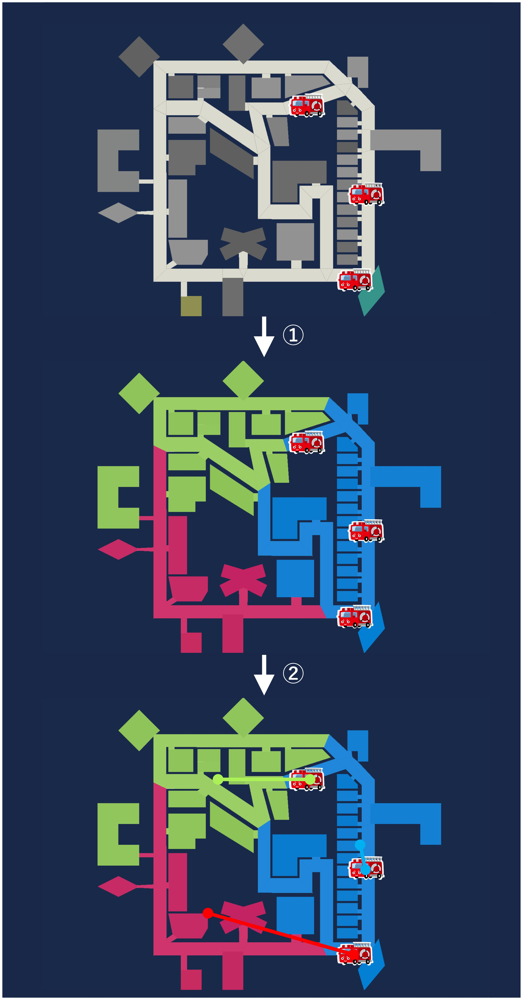

Clustering Module#
Purpose of the Clustering Module#
When operating multiple agents, it is crucial to determine how to coordinate them. In RRS, many teams adopt coordination methods that assign each agent a designated area of responsibility (as well as other coordination methods). To assign these areas, objects on the map need to be divided into several groups. A module called the clustering module is used to manage these groupings.
In this document, we will implement a clustering module using algorithms commonly employed by many teams participating in world championships.
Overview of the Clustering Module to Be Developed#
The module developed in this document, as shown in the image below,
Divides the objects on the map into sections equal to the number of agents using the k-means++ algorithm.
Assigns the sections to the agents in a one-to-one manner using the Hungarian algorithm, minimizing the total distance between them.

Implementation of the Clustering Module#
Note
The following tasks assume that the current directory is the root directory of the project.
First, create a file to write the clustering module.
mkdir -p src/<your_team_name>/module/algorithm
touch src/<your_team_name>/module/algorithm/k_means_pp_clustering.py
Next, implement the clustering module. Write the following code into k_means_pp_clustering.py.
import numpy as np
from adf_core_python.core.agent.develop.develop_data import DevelopData
from adf_core_python.core.agent.info.agent_info import AgentInfo
from adf_core_python.core.agent.info.scenario_info import ScenarioInfo, ScenarioInfoKeys
from adf_core_python.core.agent.info.world_info import WorldInfo
from adf_core_python.core.agent.module.module_manager import ModuleManager
from adf_core_python.core.component.module.algorithm.clustering import Clustering
from adf_core_python.core.logger.logger import get_logger
from rcrs_core.connection.URN import Entity as EntityURN
from rcrs_core.entities.ambulanceCenter import AmbulanceCentre
from rcrs_core.entities.building import Building
from rcrs_core.entities.entity import Entity
from rcrs_core.entities.fireStation import FireStation
from rcrs_core.entities.gasStation import GasStation
from rcrs_core.entities.hydrant import Hydrant
from rcrs_core.entities.policeOffice import PoliceOffice
from rcrs_core.entities.refuge import Refuge
from rcrs_core.entities.road import Road
from rcrs_core.worldmodel.entityID import EntityID
from scipy.optimize import linear_sum_assignment
from sklearn.cluster import KMeans
# クラスタリングのシード値
SEED = 42
class KMeansPPClustering(Clustering):
def __init__(
self,
agent_info: AgentInfo,
world_info: WorldInfo,
scenario_info: ScenarioInfo,
module_manager: ModuleManager,
develop_data: DevelopData,
) -> None:
super().__init__(
agent_info, world_info, scenario_info, module_manager, develop_data
)
# ロガーの取得
self._logger = get_logger(f"{self.__class__.__name__}")
# クラスター数の設定
self._cluster_number: int = 1
match agent_info.get_myself().get_urn():
# エージェントのクラスに応じてクラスター数を設定
case EntityURN.AMBULANCE_TEAM:
self._cluster_number = scenario_info.get_value(
ScenarioInfoKeys.SCENARIO_AGENTS_AT,
1,
)
case EntityURN.POLICE_FORCE:
self._cluster_number = scenario_info.get_value(
ScenarioInfoKeys.SCENARIO_AGENTS_PF,
1,
)
case EntityURN.FIRE_BRIGADE:
self._cluster_number = scenario_info.get_value(
ScenarioInfoKeys.SCENARIO_AGENTS_FB,
1,
)
# 自分と同じクラスのエージェントのリストを取得
self._agents: list[Entity] = world_info.get_entities_of_types(
[
agent_info.get_myself().__class__,
]
)
# クラスタリング結果を保持する変数
self._cluster_entities: list[list[Entity]] = []
# クラスタリング対象のエンティティのリストを取得
self._entities: list[Entity] = world_info.get_entities_of_types(
[
AmbulanceCentre,
FireStation,
GasStation,
Hydrant,
PoliceOffice,
Refuge,
Road,
Building,
]
)
def calculate(self) -> Clustering:
return self
def get_cluster_number(self) -> int:
"""
クラスター数を取得する
Returns
-------
int
クラスター数
"""
return self._cluster_number
def get_cluster_index(self, entity_id: EntityID) -> int:
"""
エージェントに割り当てられたクラスターのインデックスを取得する
Parameters
----------
entity_id : EntityID
エージェントのID
Returns
-------
int
クラスターのインデックス
"""
return self._agent_cluster_indices.get(entity_id, 0)
def get_cluster_entities(self, cluster_index: int) -> list[Entity]:
"""
クラスターのエンティティのリストを取得する
Parameters
----------
cluster_index : int
クラスターのインデックス
Returns
-------
list[Entity]
クラスターのエンティティのリスト
"""
if cluster_index >= len(self._cluster_entities):
return []
return self._cluster_entities[cluster_index]
def get_cluster_entity_ids(self, cluster_index: int) -> list[EntityID]:
"""
クラスターのエンティティのIDのリストを取得する
Parameters
----------
cluster_index : int
クラスターのインデックス
Returns
-------
list[EntityID]
クラスターのエンティティのIDのリスト
"""
if cluster_index >= len(self._cluster_entities):
return []
return [entity.get_id() for entity in self._cluster_entities[cluster_index]]
def prepare(self) -> Clustering:
"""
エージェントの起動時に一回のみ実行される処理
"""
super().prepare()
if self.get_count_prepare() > 1:
return self
# クラスタリングを実行
kmeans_pp = self._perform_kmeans_pp(self._entities, self._cluster_number)
# クラスタリング結果を保持
self._cluster_entities = [[] for _ in range(self._cluster_number)]
for entity, cluster_index in zip(self._entities, kmeans_pp.labels_):
self._cluster_entities[cluster_index].append(entity)
# エージェントとクラスターのエンティティの距離を計算し、最も全体の合計の距離が短くなるようにエージェントとクラスターを対応付ける
agent_cluster_indices = self._agent_cluster_assignment(
self._agents, kmeans_pp.cluster_centers_
)
# エージェントとクラスターの対応付け結果を保持
self._agent_cluster_indices = {
entity.get_id(): cluster_index
for entity, cluster_index in zip(self._agents, agent_cluster_indices)
}
# デバッグ用のログ出力
self._logger.info(
f"Clustered entities: {[[entity.get_id().get_value() for entity in cluster] for cluster in self._cluster_entities]}"
)
self._logger.info(
f"Agent cluster indices: {[([self._world_info.get_entity(entity_id).get_x(), self._world_info.get_entity(entity_id).get_y()], int(cluster_index)) for entity_id, cluster_index in self._agent_cluster_indices.items()]}"
)
return self
def _perform_kmeans_pp(self, entities: list[Entity], n_clusters: int = 1) -> KMeans:
"""
K-means++法によるクラスタリングを実行する
Parameters
----------
entities : list[Entity]
クラスタリング対象のエンティティのリスト
n_clusters : int, optional
クラスター数, by default 1
Returns
-------
KMeans
クラスタリング結果
"""
entity_positions: np.ndarray = np.array(
[
[entity.get_x(), entity.get_y()]
for entity in entities
if entity.get_x() is not None and entity.get_y() is not None
]
)
entity_positions = entity_positions.reshape(-1, 2)
kmeans_pp = KMeans(
n_clusters=n_clusters,
init="k-means++",
random_state=SEED,
)
kmeans_pp.fit(entity_positions)
return kmeans_pp
def _agent_cluster_assignment(
self, agents: list[Entity], cluster_positions: np.ndarray
) -> np.ndarray:
"""
エージェントとクラスターの対応付けを行う
Parameters
----------
agents : list[Entity]
エージェントのリスト
cluster_positions : np.ndarray
クラスターの位置のリスト
Returns
-------
np.ndarray
エージェントとクラスターの対応付け結果
"""
# エージェントの位置のリストを取得
agent_positions = np.array(
[
[agent.get_x(), agent.get_y()]
for agent in agents
if agent.get_x() is not None and agent.get_y() is not None
]
)
# エージェントとクラスターの距離行列を計算
agent_positions = agent_positions.reshape(-1, 2)
cost_matrix = np.linalg.norm(
agent_positions[:, np.newaxis] - cluster_positions, axis=2
)
# ハンガリアンアルゴリズムによりエージェントとクラスターの対応付けを行う
_, col_ind = linear_sum_assignment(cost_matrix)
return col_ind
The implementation of k-means++ uses the KMeans class from scikit-learn. The KMeans class clusters objects on the map based on the number of clusters specified by n_clusters. The clustering results are stored in the labels_ attribute, and the coordinates of each cluster center are stored in the cluster_centers_ attribute.
The implementation of the Hungarian algorithm uses the linear_sum_assignment function from scipy. The linear_sum_assignment function takes a cost matrix as an argument and performs optimal assignment.
Next, register the created module. Edit config/module.yaml as follows.
SampleSearch:
PathPlanning: adf_core_python.implement.module.algorithm.a_star_path_planning.AStarPathPlanning
Clustering: src.<your_team_name>.module.algorithm.k_means_pp_clustering.KMeansPPClustering
SampleHumanDetector:
Clustering: src.<your_team_name>.module.algorithm.k_means_pp_clustering.KMeansPPClustering
Open two terminals.
Open one terminal and start the simulation server with the following command:
# Terminal A
cd WORKING_DIR/rcrs-server/scripts
./start-comprun.sh -m ../maps/tutorial_ambulance_team_only/map -c ../maps/tutorial_ambulance_team_only/config
Then open another terminal and start the agent:
# Terminal B
cd WORKING_DIR/<your_team_name>
python main.py
When the agent starts, the clustering results will be displayed in the standard output.
[info ] Clustered entities: [[257, 259, 262, 263, 270, 278, 280, 297, 336, 913, 914, 915, 916, 917, 918, 919, 933, 941, 942, 943, 944, 945, 946, 947, 974, 250, 253], [349, 896, 899, 902, 934, 960, 968, 969, 970, 971, 248, 251], [258, 266, 268, 269, 274, 275, 279, 920, 921, 922, 923, 924, 925, 926, 927, 928, 929, 932, 948, 949, 950, 951, 952, 953, 954, 955, 956, 957, 958, 959, 975, 976, 254, 255], [256, 271, 273, 281, 296, 298, 314, 330, 903, 904, 905, 910, 911, 912, 935, 936, 937, 938, 939, 940, 247, 249]] [KMeansPPClustering]
[info ] Agent cluster indices: [([89544, 19925], 1), ([69989, 120063], 0), ([130029, 50380], 2), ([29898, 59056], 3)] [KMeansPPClustering]
As it is, the clustering results are not very clear, so let’s display the clustering results on the map.
Download the cluster visualization script and extract it. Then, in main.py, modify the following part.
# クラスタリング結果
clusters = []
Copy the array after Clustered entities: in the output and paste it.
Example
# クラスタリング結果
clusters = [[257, 259, 262, 263, 270, 278, 280, 297, 336, 913, 914, 915, 916, 917, 918, 919, 933, 941, 942, 943, 944, 945, 946, 947, 974, 250, 253], [349, 896, 899, 902, 934, 960, 968, 969, 970, 971, 248, 251], [258, 266, 268, 269, 274, 275, 279, 920, 921, 922, 923, 924, 925, 926, 927, 928, 929, 932, 948, 949, 950, 951, 952, 953, 954, 955, 956, 957, 958, 959, 975, 976, 254, 255], [256, 271, 273, 281, 296, 298, 314, 330, 903, 904, 905, 910, 911, 912, 935, 936, 937, 938, 939, 940, 247, 249]]
After pasting, execute the following command.
pip install -r requirements.txt
python main.py
An image like the one below will be output.